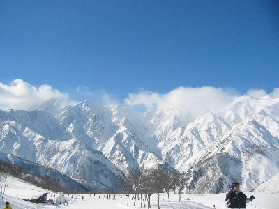
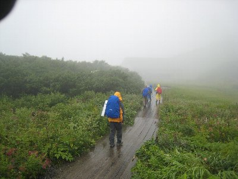
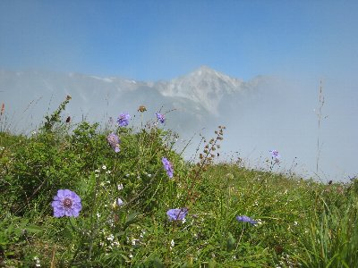
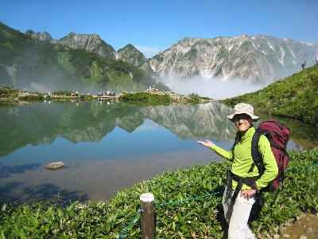
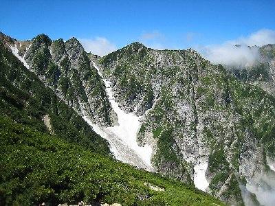
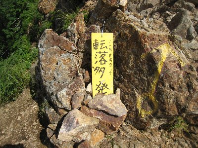
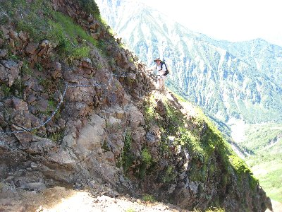
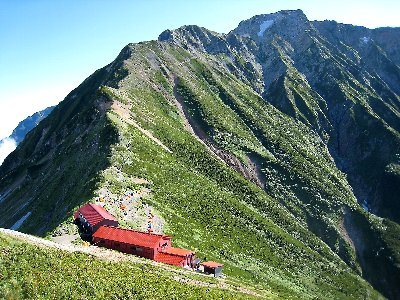

五竜岳・唐松岳登山 | 2009年8月 |
|---|---|
| 五竜岳は、結構知っている人いるよね。あの五竜スキー場後方にそびえる山です。でも、どれが五竜岳かわかないんだけどね。多分、五竜スキー場の一番上から見える雪かぶった鋭い山かな。そんなところです。 今回はその山に行きました。当然、雪のシーズンではないので、山はいたって穏やかです。 今回の目標は五竜岳と、唐松岳。八方尾根スキー場のゴンドラとリフトを乗り継いで、標高1800ｍ八方池山荘まで登ります。こりゃ〜楽チンと考えて、今回はテント泊を決行。（考え甘いね）今回は二人だしね。一緒に行った連れはヤマちゃん。 朝7時にゴンドラが動き出します。すでにチケット売場には人の列が・・・ 登山客からカメラを抱えた人まで様々です。 天候は曇り。ゴンドラを降りたら雨が降っていました。レインコートを着て次のリフトへ。八方池山荘についても霧雨です。しかし、空は明るい雰囲気に変わってきました。雲の上はもう直ぐだ！ ここでGPSを忘れたことに気づきまして、今回はログ無しです。とほほ・・ | |
|  冬はこんな感じの山です。 |  霧雨の中木道をモクモクと |
| 8時出発。しばらくは木道になっていて、高山植物の中を登っていきます。霧の中で、小さな花が綺麗に咲いています。雨があがったのでレインコートを脱ぎました。 １時間ほど歩いたら八方池に到着！ （ここでビックリマーク） 知らぬ間に雲の上に出ていたらしく、下は雲海。そこに晴れ渡った青空の下、白馬三山を移しこんだ八方池が！ すごい綺麗です。今日は当たりですね。雲海に虹がでて綺麗さ倍増！ 観光パンフレットのような景色を、コンデジでバシバシ撮り、「いいね〜いいね〜」を連発しながら休憩。 | |
|  高山植物も沢山 |  これが八方池でぇ〜す |
| あまり休んでいては予定に支障が出るため、後ろ髪を引かれる思いで八方池を後にしました。お昼までに唐松山頂山荘に着きたいからね。 さらに1時間ほど歩いたら「扇雪渓」に到着。雪が残ってますよ。でも、予定より早いかな？ 少し歩いたら、また絶景ポイントへ。白馬の山々が迫るような勢いで前面に広がります。青い空と残雪、岩。そして後方には雲海。これ小さい写真だと雰囲気でないよ〜。目の前全部が迫る山って感じですから。この雰囲気って行かないと分らないよね〜 自分ちっさいっ思えるから。 休憩もほどほどに（ヤマちゃんに急かされて）、すぐさま出発。がんばって歩いたら12時前に唐松山頂山荘に着いちゃった。 持ってきたおにぎりを食べて、荷物を置き、唐松岳までカラ荷で往復。だって、直ぐそこに見えるもの。片道20分ってところですか。 唐松岳山頂(2696m)からは、北は白馬方面が見え、南西方向に剣岳が見えるはずだがちょっと雲に掛かってる。雲の隙間をぬって写真撮影。さて、行きますか。 | |
 虹が綺麗にでてました |  迫ってくる勢いの山々 |
| 唐松山頂山荘に戻り、ザックを背負い直して紐と気を引き締めます。ここから五竜山荘ですが、ここからクサリ場あり。ちょっと大変って書いてあるポイントです。唐松山頂山荘と五竜山荘の標高はあまり変わらないけど、一度大きく下るんです。せっかく登ったのにもったいない。 先ほどまでの登山道と違い、鋭い岩がむき出してきて、足場も怪しくなります。登山客も少なくなりました。クサリ場は、本当にクサリを掴まないと危険な感じです。足踏み外したら死にます。多分、鋭い岩で切り裂かれながら転げ落ち、痛い思いをしながら死ぬでしょう。それは嫌！ 中高年のみなさま、ここ危険ですよ。気をつけて通ってください。 | |
|  転落したらタダでは済みません |  クサリ場ってこんなとこ |
| なんだかんだで、15時30分過ぎには五竜山荘到着。受付してテント張ってビール買って、乾杯〜〜♪ ぷはぁ〜 たまりません〜 テントの数多いけど、景色は最高です。山小屋は、何とか一人一つの布団みたいです。お盆なのにね。 夕食の準備をしていたら、廻りが騒ぎ出したので、何かと思い行ってみると、ブロッケン現象がおきていました！（ブロッケン現象とは、太陽を背にしたとき、反対側の雲・霧に自分の影が映り、その周りに虹が浮かぶ事）ちょっと薄いけど、立派なブロッケンです。 日が沈む前に夕食にしましょう。今夜はアルファ米とハッシュドビーフ（レトルト）です。テントまで雄大な景色を眺めながら食事。うん、最高。ちょっと冷えてきたかな。 夕日を眺めたらテントでお酒をちびりと。20時就寝です。またしても、私は即寝で、記憶がありません。 夜中、といっても23時ですが目を覚まし、せっかくなので星を見ることにしました。小屋も消灯しており、月も出ていないので真っ暗です。眼下には、長野でしょうか、大町と思われる町明りが見えます。丁度、天頂付近に天の川。はっきり見えます。白鳥座やこと座もくっきりと。うん、静かだ。虫の声さえしません。標高高いからね。寒し。 | |
|  五竜山荘と五竜岳 |  朝の五竜岳 |
| 翌朝、4時起床。朝食に潰れたパンを食べ、朝5時40分五竜岳に向けて出発。テントはそのまま。荷物も最低限で。今日もいい天気だ。 五竜岳は、後半岩をよじ登る箇所がありますが、比較的登りやすかったかな。荷物も軽かったのもあるけど。１時間予定を50分で行けました。（まあ、ヤマちゃんに急かされたのも有るけど） 五竜岳山頂(2814m)富山県（一瞬騙されます。もうちょっと向こうです）からの景色も最高でした。剣岳もくっきり。今まできた道を見ると、・・・あ〜あれを今から帰るのか。あ、五竜岳は百名山です。これで、また一個制覇。 帰りは同じ道を帰ったのでワープ速度で。 唐松岳までのクサリ場も、帰りは登り。だから行きほど怖くは有りません。しかし、鋭い岩でズボンを引っ掛けて破いてしまいました。とほほ〜 13時45分には下山。蕎麦食って温泉入って帰りました。 | |
| 写真＆コメント ｂｙ べっしー | |